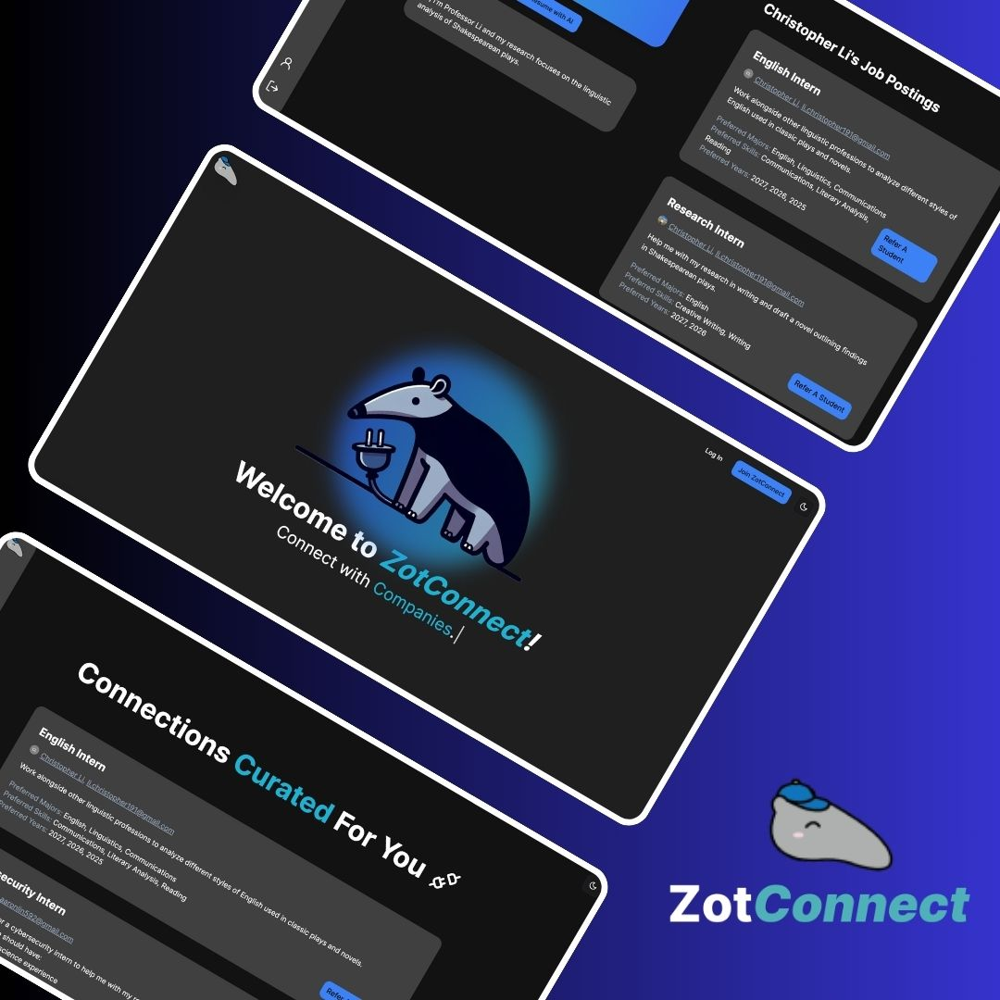

ZotConnect: Bridging the Gap Between Professors and Students
Created a career development web application to streamline professor and student communications regarding potential job or internship opportunities with a 2 day hackathon.
View More